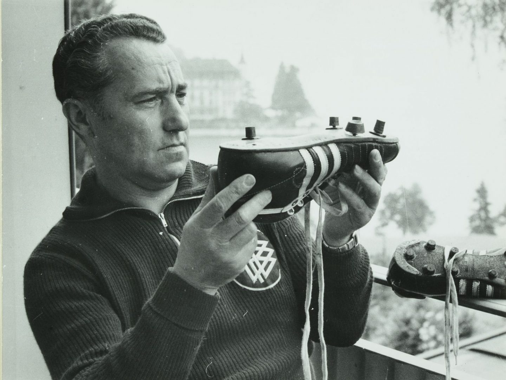
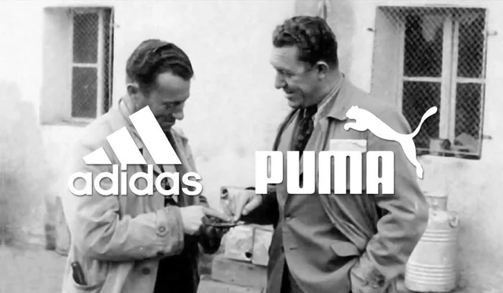
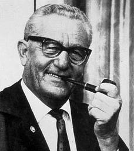

Adidas VS Puma
The story of Adidas and Puma is one of the greatest family dramas in business history. It is the story of two choices and what happened
because of them.
There were two brothers in the small German town, Adolf and Rudolf Daslers. They had the ability to make the best athletes shoes in the world.
In their mother's washroom, they started a company. Adolf or "Adi" was an inventor. Rudolf or "Rudi" was a salesman. Their experience was perfect.
Adi could design shoes that could help athletes could run faster. Rudi could sell their dream to the world.
They had the freedom to innovate. They used the 1936 Olympic Games as an Opportunity. They made shoes for the American runner Jesse Owens. When
he won four gold medals, the world noticed them, and their confidence grew.
But then, a challenge came. During World War 2 they had a misunderstanding, then they made a final choice. In 1948, they split the company in two.
Adolf Dasler based "adidas", and Rudolf based "puma".
But, what if they could work together? What if Adolf and Rudolf brothers could design together?
Imagine if they used their shared responibility to their brand, they could solve any challenge twice as fast. Adi's genius for design and Rudi's genius
for for sales could be an unstoppable ability.
They could use their experience to improve not just shoes, but whole sports. They could face every competitor with double confidence. The opportunity
they lost could be an opportunity to build the greatest sports company in the world.
Sometimes, the big challenge to solve is not in the market, but it could be at home. The wall they built in a small town in Germany kept them out from their
own greatest possible future.